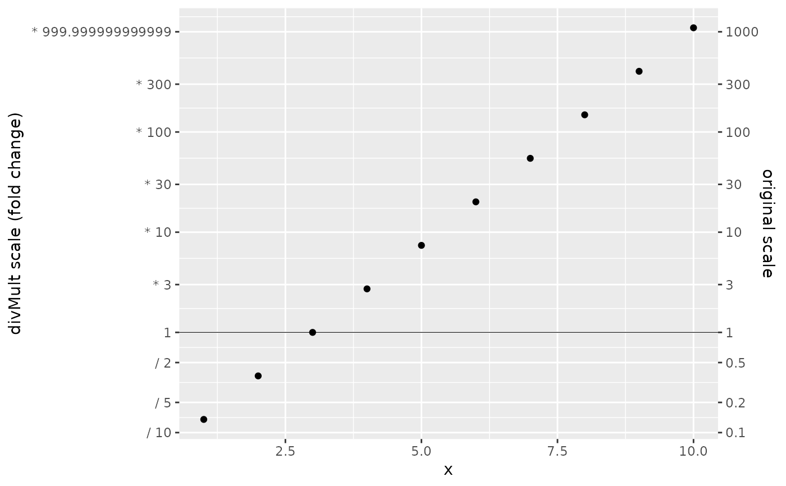
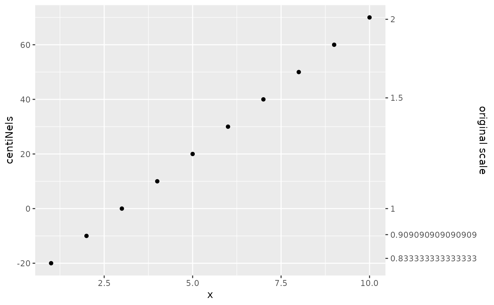
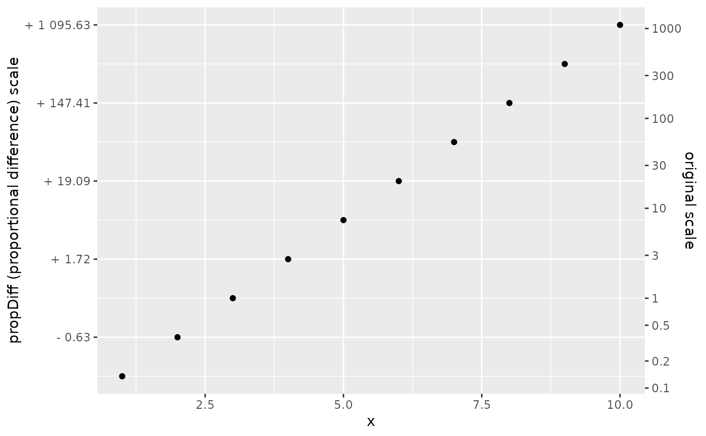

Ratio-based position scales for continuous data (x & y)
scale_y_ratio.Rdscale_x_ratio and scale_y_ratio are alternatives to traditional
scale_*_continuous scales for continuous x and y aesthetics, to explicitly
highlight multiplicative or geometric value changes. Rather than traditional
log transformations (as in scale_*_log10()), which rescale the axis and
return tickmarks on the original scale of the data, scale_*_ratio axis tick
values represent a multiplicative change from a reference point. These scales
may be especially useful for highlighting proportional changes.
Arguments
- tickVal
Character, one of "divMult", "nel", "centiNel", or "propChange"
- trans
Function or Character name of transformation
- ref
Scalar, reference value for proportional change
- ...
Additional arguments passed to
scale_y_continuous
Details
Logarithmic transformations make multiplicative changes additive,
and are often used to highlight relative change. It is traditional to
rescale an axis logarithmically and mark ticks with original data values
(e.g. scale_y_log10)). scale_*_ratio is provides
an alternative, marking ticks with transformed values. This may be
especially useful when comparing relative changes of quantities with
different units.
Four ratio scales are provided (and denoted with the tickVal argument):
divMultrescales an axis logarithmically, and prints multiplicative changes for axis ticks, explicitly noting the operator ( \(\times\) or \(\div\)). This scale highlights symmetry between division and multiplication (\(a \times 2\) is equally far from \(a\) as is \(a \div 2\)).nelrescales an axis logarithmically, and prints changes in units of "nels" (for _N_atural _L_ogarithm).centiNelrescales an axis logarithmically, and prints changes in units of "centinels," i.e. one hundredth of a "nel". These may be more appropriate for small changes (i.e. of a few to a few hundred percents)
-propChange rescales an axis logarithmically, and prints changes in units
of proportional change. Unlike when percentages are plotted on an
arithmetic scale, the propChange transformation reveals underlying
geometric symmetry: (\(a \times 2\) is equally far from \(a\) as is
\(a \div 2\)) graphically, but tick values indicate the more familiar
proportional change.
For small changes, centiNels may be preferable to nels, while for
larger changes, nels may be preferable (in the same way that small
proportional changes are commonly displayed as percentages rather than
proportions)
In many cases, the data passed to scale_*_ratio should be centered on the
reference value in advance. The propChange transformation can rescale to
a provided reference value (with the argument ref), but for attractive
breakpoints and clear code, rescaling before an "aesthetic" is passed
to scale_*_ratio is advised.
Examples
y <- exp(seq(-2,5, length.out = 10))
x <- 1:10
dat <- data.frame(x, y)
dat %>% ggplot2::ggplot(ggplot2::aes(x, y))+
ggplot2::geom_point()+
ggplot2::geom_hline(yintercept = 1, size = 0.2) +
scale_y_ratio(tickVal = "divMult"
, sec.axis = ggplot2::sec_axis(
labels = function(x) {x}
, trans = ~.
, breaks = c(0.1, 0.5, 1, 5, 10, 50, 100, 500, 1000)
, name = "original data"
)) +
ggplot2::labs(y = "divMult scale (fold change)")

dat %>% ggplot2::ggplot(ggplot2::aes(x, y))+
ggplot2::geom_point()+
scale_y_ratio(tickVal = "centiNel"
, ref = 1
, sec.axis = ggplot2::sec_axis(
labels = function(x) {x}
, trans = ~.
, breaks = c(0.1, 0.5, 1, 5, 10, 50, 100, 500, 1000)
, name = "original data"
)) +
ggplot2::labs(y = "centiNels")

# prop change can be tied to a reference value `ref`
dat %>% ggplot2::ggplot(ggplot2::aes(x, y))+
ggplot2::geom_point()+
scale_y_ratio(tickVal = "propChange"
, ref = 25
, sec.axis = ggplot2::sec_axis(
labels = function(x) {x}
, trans = ~.
, breaks = c(0.1, 0.5, 1, 5, 10, 50, 100, 500, 1000)
, name = "original data"
)) +
ggplot2::labs(y = "propChange (proportional change) scale")
#> 1 is the conventional anchor for the divMult scale.
#> You have chosen an anchor other than 1
#> Consider centering data around reference before passing to scale_*_ratio()
